수질환경기사 (2009-07-27 기출문제)
1과목: 수질오염개론
1. Glucose(C6H12O6) 100mg/L인 용액의 ThOD/TOC의 비는?
- 2.47
- 2.67
- 2.83
- 2.91
(정답률: 73%)

2. 에탄올(C2H5OH) 210mg/L가 함유된 폐수의 이론적 COD값은? (단, 기타 오염물질은 고려하지 않음)
- 약 410mg/L
- 약 440mg/L
- 약 480mg/L
- 약 490mg/L
(정답률: 66%)
3. 다음은 해수의 함유성분들이다. 이들 중 해수에 가장 적게 함유된 성분은?
- SO42-
- Ca2+
- Na+
- Mg2+
(정답률: 59%)
4. 어떤 하수의 BOD3가 70mg/L이고 탈산소계수 K(상용대수)가 0.2/day일 때 최종 BOD(mg/L)는?
- 약 84
- 약 94
- 약 104
- 약 114
(정답률: 70%)
5. 유기화합물이 무기화합물과 다른 점을 맞게 설명한 것은?
- 유기화합물은 대체로 분자반응보다는 이온반응을 하므로 반응속도가 빠르다.
- 유기화합물은 대체로 분자반응보다는 이온반응을 하므로 반응속도가 느리다.
- 유기화합물들은 대체로 이온반응보다는 분자반응을 하므로 반응속도가 빠르다.
- 유기화합물들은 대체로 이온반응보다는 분자반응을 하므로 반응속도가 느리다.
(정답률: 55%)
6. 어떤 공장에서 4%의 NaOH를 함유한 폐수 1,000m3이 배출되었다. 이 폐수를 중화시키기 위해 37% HCI을 사용하였다. 배출된 폐수를 완전히 중화시키기 위하여 필요한 37% HCI의 량(m3)은? (단, 폐수의 비중 1, 37% HCI의 비중 1.18)
- 약 55
- 약 67
- 약 84
- 약 97
(정답률: 44%)
7. 산소주입량을 구하기 위하여 먼저 물속의 용존산소농도를 0으로 만들려고 한다. 이를 위하여 용존산소가 포화(포화농도는 10mg/L로 가정)된 물에 소요되는 Na2SO3의 첨가량은? (단, Na∶23, 완전 반응하는 경우로 가정함)
- 약 79mg/L
- 약 89mg/L
- 약 99mg/L
- 약 109mg/L
(정답률: 48%)
8. 다음은 Graham의 기체법칙에 관한 내용이다. ( )안에 맞는 내용은? (단, Cl2 분자량은 71.5이다.)
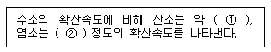
- ① 1/8, ② 1/14
- ① 1/8, ② 1/16
- ① 1/4, ② 1/6
- ① 1/4, ② 1/8
(정답률: 77%)
9. 자정계수에 관한 설명으로 틀린 것은?
- 자정계수는 대형 호수보다 소규모 저수지가 크다.
- 자정계수는 유속이 급하고 큰 하천 일수록 커진다.
- 자정계수는 [재폭기계수/탈산소계수]이다.
- 온도가 높아지면 자정계수는 낮아진다.
(정답률: 35%)
10. 다음 지하수의 특성에 대한 설명 중 잘못된 것은?
- 지하수는 국지적인 환경조건의 영향을 크게 받는다.
- 지하수의 염분농도는 지표수 평균농도 보다 낮다.
- 주로 세균에 의한 유기물 분해작용이 일어난다
- 지하수는 토양수내 유기물질 분해에 따른 탄산가스의 발생과 약산성의 빗물로 인하여 광물질이 용해되어 경도가 높다.
(정답률: 82%)
11. 지하수의 수질을 분석한 결과 다음과 같았다. 이 지하수의 이온강도( Ⅰ )는?
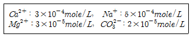
- 0.0095
- 0.00095
- 0.0083
- 0.00083
(정답률: 56%)
12. Ca(OH)2 1,000mg/l 용액의 pH는? (단, Ca(OH)2는 완전해리, Ca 원자량∶40)
- 11.44
- 11.74
- 12.03
- 12.43
(정답률: 58%)
13. 우리나라 근해의 적조(Red Tide)현상의 발생 조건에 대한 설명으로 가장 적절한 것은?
- 햇빛이 약하고 수온이 낮을 때 이상 균류의 이상 증식으로 발생한다.
- 여름철 갈수기에 수온상승에 따른 상승류 현상으로 난류가 형성될 때 잘 발생된다.
- 정체수역에서 많이 발생된다.
- 질소, 인 등의 영양분 부족하여 적색이나 갈색의 적조 미생물이 이상적으로 증식한다.
(정답률: 71%)
14. 다음 중 옳은 것은?
- 호흡은 영양물질을 고분자물질로 산화 분해 시키면서 유기적 조직체에 부수적ㆍ단계적으로 에너지를 공급하는 일련의 생물화학적반응이다.
- 독립영양미생물은 세포질 탄소원으로 유기질을 이용하여 복잡한 영양물질을 만들어 낸다.
- 녹색식물의 광합성은 탄산가스와 물로부터 산소와 포도당 또는 포도당 유도산물을 생산하는 것이 특징이다.
- 생물체내에서 일어나는 에너지 대사는 물리학에서 일컫는 열역학의 법칙에서 제외된다.
(정답률: 56%)
15. 조류(Algae)의 경험적 분자식으로 가장 적절한 것은?
- C5H8O2N
- C6H7O2N
- C7H8O5N
- C8H9O5N
(정답률: 63%)
16. 문제 복구 오류로 문제 내용이 정확하지 않아서 삭제 하였습니다. 정확한 문제 내용을 아시는분 께서는 오류 신고를 통하여 내용 작성 부탁 드립니다. 정다은 2번 입니다.)
- 관련 미생물∶통성 혐기성균
- 증식속도∶2～8mg NO3-－N/MLSSㆍHr
- 알칼리도∶NO3-－N, NO2-－N 환원에 따라 알칼리도 생성
- 수소공여체∶NO3-, NO2-
(정답률: 48%)
17. 원핵세포와 진핵세포에 관한 설명으로 틀린 것은?
- 원핵세포는 핵막이 없고 진핵세포는 있다.
- 원핵세포의 세포소기관은 리보좀 70S로 진핵 세포에 비해 크기가 작다.
- 모든 진핵세포가 가지고 있는 세포소기관은 미토콘드리아 이다.
- 미토콘드리아는 호흡대사와 ATP 생산 즉 에너지 생산기능을 수행한다.
(정답률: 58%)
18. 콜로이드 응집의 기본 메카니즘과 가장 거리가 먼 것은?
- 이중층 분산
- 전하의 중화
- 침전물에 의한 포착
- 입자간의 가교 형성
(정답률: 46%)
19. 다음 화합물(C5H7O2N)에 대한 이론적인 BOD5/COD는? (단, 탈산소계수 0.1/day, base는 상용대수, 화합물은 100% 산화됨(최종산물은 CO2, NH3, H2O), COD＝BODu)
- 0.37
- 0.68
- 0.83
- 0.92
(정답률: 53%)
20. BOD 1kg의 제거에 보통 1kg의 산소가 필요하다면 1.45ton의 BOD가 유입된 하천에서 BOD를 완전히 제거하고자 할 때 요구되는 공기량은? (단, 물의 산소흡수율은 7%이며, 공기 1m3은 0.236kg의 O2를 함유한다고 하고 하천의 BOD는 고려하지 않음)
- 약 68,000m3
- 약 78,000m3
- 약 88,000m3
- 약 98,000m3
(정답률: 60%)
2과목: 상하수도계획
21. 소규모 하수도 계획시 고려하여야 하는 소규모 고유의 특성과 가장 거리가 먼 것은?
- 계획구역이 작고 처리구역내의 생활양식이 유사하여 유입하수의 수량 및 수질의 변동이 작다.
- 처리수의 방류지점이 유량이 작은 소하천, 소호소 및 농업용수로 등이므로 처리수의 영향을 받기가 쉽다.
- 하수도 운영에 있어서 지역주민과 밀접한 관련을 갖는다.
- 고장 및 유지보수시에 기술자의 확보가 곤란하고 제조업체에 의한 신속한 서비스를 받기 어렵다.
(정답률: 67%)
22. 직경 450mm인 상수용 도수관이 기울기 10‰로 매설되어 있다. 만수 된 상태로 송수된다고 할 때 Manning 공식에 의한 유량(Q)은? (단, 조도계수 n＝0.015이다.)
- 약 6m3/min
- 약 9m3/min
- 약 12m3/min
- 약 15m3/min
(정답률: 52%)
23. 하수도 관거의 접합방법 중 굴착 깊이를 얕게 함으로 공사비를 줄일 수 있으며 수위상승을 방지하고 양정고를 줄일 수 있어 펌프로 배수 하는 지역에 적합하나 상류부에서는 동수경사선이 관정보다 높이 올라 갈 우려가 있는 것은?
- 수면접합
- 관저접합
- 동수접합
- 관정접합
(정답률: 58%)
24. 다음은 정수시설인 배수지에 관한 내용이다. ( )안에 맞는 내용은?
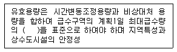
- 4시간분 이상
- 6시간분 이상
- 8시간분 이상
- 12시간분 이상
(정답률: 70%)
25. 하수 슬러지 농축방법 중 원심분리 농축에 관한 설명으로 틀린 것은? (단, 중력식, 부상식, 중력벨트 농축과 비교 기준)
- 잉여슬러지에 효과적이다.
- 악취가 적다.
- 소음이 작다.
- 고속도로 농축이 가능하다.
(정답률: 59%)
26. 취수탑의 취수부에 관한 설명으로 틀린 것은?
- 단면현상은 장방형 또는 원형으로 한다.
- 전면에 토사물 제거를 위한 침사지를 설치 해야 한다.
- 취수탑의 내측이나 외측에 슬루스게이트 (제수문), 버터플라이밸브 또는 제수밸브 등을 설치한다.
- 취수구의 단면적은 하천의 경우 원칙적으로 유입속도를 15～30cm/sec를 표준으로 결정한다
(정답률: 22%)
27. 하수처리 시설 중 이차침전지에 관한 설명으로 틀린 것은?
- 표면부하율은 표준활성슬러지법의 경우, 계획1일 최대 오수량에 대하여 20～30m3/m2ㆍd로 한다
- 고형물 부하율은 40～125kg/m2ㆍd로 한다.
- 유효수심은 2.5～4m를 표준으로 한다.
- 침전시간은 계획1일 최대오수량에 따라 정하며 일반적으로 6～8시간으로 한다.
(정답률: 36%)
28. 다음은 상수 급수시설인 급수관의 배관기준에 관한 내용이다. ( )안에 맞는 내용은?
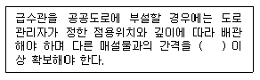
- 30cm
- 60cm
- 90cm
- 120cm
(정답률: 52%)
29. 배수면적이 50km2인 지역의 우수량이 530m3/s일 때 이 지역의 강우강도(Ⅰ)는 몇 mm/hr인가? (단, 유출계수∶0.83, 우수량의 산출은 합리식에 적용)
- 14
- 22
- 32
- 46
(정답률: 56%)
30. 펌프의 규정회전수는 10회/sec, 규정토출량은 0.3m3/sec, 펌프의 규정양정이 5m 일 때 비교 회전도는?
- 642
- 761
- 836
- 935
(정답률: 56%)
31. 하수처리시설인 오수 침사지의 표면 부하율로 적절한 것은?
- 1,800m3/m2ㆍd 정도
- 2,400m3/m2ㆍd 정도
- 3,200m3/m2ㆍd 정도
- 3,600m3/m2ㆍd 정도
(정답률: 53%)
32. 수도관으로 사용되는 관종 중 덕타일 주철관에 관한 설명으로 틀린 것은?
- 내외의 방식면이 손상되면 부식되기 쉽다.
- 이음에 신축 휨성이 있고 관이 지반의 변동에 유연하다.
- 중량이 비교적 무겁고 충격에 약하다.
- 이음의 종류에 따라서는 이형관 보호공을 필요로 한다.
(정답률: 34%)
33. 정수시 처리대상물질(항목)과 처리방법을 잘못 짝지은 것은?
- 불용해성성분－조류－부상분리
- 불용해성성분－미생물(크립토스포리디움)－활성탄
- 불용해성성분－탁도－완속여과방식
- 용해성성분－트리클로로에틸렌－폭기(스트리핑)
(정답률: 32%)
34. 다음 그림과 같은 상수관로에서 단면 ①의 지름이 0.5m, 유속이 2m/sec이고 단면 ②의 지름이 0.2m일 때 단면 ②에서의 유속은? (단, 만관 기준이며 유량은 변화 없음)(복원 오류로 그림 파일이 없습니다. 정답은 4번입니다.)
- 약 5.5m/sec
- 약 8.5
- 약 9.5m/sec
- 약 12.5m/sec
(정답률: 56%)
35. 호기성 소화조에 관한 설명으로 맞는 것은?
- 소화조의 수는 최소한 4조 이상으로 한다.
- 지붕이 불필요하고 가온시킬 필요성이 없다.
- 원형인 경우 바닥의 기울기는 5～10% 정도 되게 한다.
- 측심은 2～3m 정도로 한다.
(정답률: 41%)
36. 하수도계획의 자료조사를 위하여 계획대상 지역의 자연적 조건 중 하천의 흐름 상태를 조사하고자 한다. 조사할 사항과 가장 거리가 먼 것은?
- 지형에 따른 지하수위 현황
- 호소, 해역 등 수저의 지형, 이용 상황, 유속 및 유량
- 하천 및 기존배수로의 상황
- 조사지역내 수역의 유량 및 수위 등의 현황
(정답률: 27%)
37. 계획취수량을 확보하기 위하여 필요한 저수용량의 결정에 사용되는 계획 기준년에 관한 내용으로 가장 적절한 것은?
- 원칙적으로 5개년에 제 1위 정도의 갈수록 표준으로 한다.
- 원칙적으로 7개년에 제 1위 정도의 갈수를 표준으로 한다.
- 원칙적으로 10개년에 제 1위 정도의 갈수를 표준으로 한다.
- 원칙적으로 15개년에 제 1위 정도의 갈수를 표준으로 한다.
(정답률: 77%)
38. 비교회전도가 700～1,200인 경우에 사용되는 하수 도용 펌프 형식으로 적절한 것은? (단, 일반적인 단위 적용시)
- 터어빈펌프
- 불류트펌프
- 축류펌프
- 사류펌프
(정답률: 72%)
39. 고도정수 처리시 해당물질의 처리방법으로 가장 거리가 먼 것은?
- pH가 낮은 경우에는 플록형성 후에 알칼리제를 주입하여 pH를 조정한다.
- 색도가 높을 경우에는 응집침전처리, 활성탄처리 또는 오존처리를 한다.
- 음이온 계면활성제를 다량 함유한 경우에는 응집 또는 염소처리를 한다.
- 원수 중에 불소가 과량으로 포함된 경우에는 응집처리, 활성알루미나, 골탄, 전해 등의 처리를 한다.
(정답률: 29%)
40. 상수도 송수시설의 계획 송수량 산정에 기준이 되는 수량은?
- 계획 1일 최대 급수량
- 계획 1일 평균 급수량
- 계획 1일 시간 최대 급수량
- 계획 1일 시간 평균 급수량
(정답률: 53%)
3과목: 수질오염방지기술
41. 미처리 폐수에서 냄새를 유발하는 화합물과 냄새의 특징으로 맞는 것은?
- 아민류－생선 냄새
- 유기 황화물－배설물 냄새
- 스카톨－썩은 채소냄새
- 머캅탄류－암모니아 냄새
(정답률: 40%)
42. 하루 유량 5,000m3인 폐수를 용량이 1,500m3인 활성슬러지 폭기조로 처리한다. 이 때 Kd=0.06/일, Y＝0.6MLSSmg/BODmg, MLSS는 6,000mg/L로 유지 되고 있고 유입 BOD 500mg/L는 활성슬러지 폭기조 에서 BOD 90% 제거된다면 SRT는? (단, 활성슬러지 공법의 폭기조만 고려함)
- 11.1일
- 12.2일
- 13.3일
- 14.4일
(정답률: 45%)
43. 최종 BODu 1kg을 안정화 시킬 때 생산되는 메탄의 양(kg)은? (단, 혐기성, 유기물은 C6H12O6이며 완전분해기준)
- 0.15
- 0.25
- 0.35
- 0.45
(정답률: 48%)
44. 하수처리를 위한 소독방법의 비교에 관한 내용으로 틀린 것은?
- 부식성－CIO2∶있음, NaOCI∶있음
- pH 영향－CIO2∶없음, NaOCI∶없음
- 색도제거－CIO2∶제거, NaOCI∶보통
- 바이러스 사멸－CIO2∶좋음, NaOCI∶좋음
(정답률: 18%)
45. 하수처리에 관련된 침전현상(독립, 응집, 간섭, 압밀)의 종류 중 ‘간섭침전’에 관한 설명과 가장 거리가 먼 것은?
- 깊은 2차 침전시설과 슬러지농축시설의 바닥에서 발생한다.
- 입자 간의 작용하는 힘에 의해 주변 입자들의 침전을 방해하는 중간 정도 농도의 부유액에서의 침전을 말한다.
- 입자 등은 서로 간의 상대적 위치를 변경시키려 하지 않고 전체 입자들은 한 개의 단위로 침전한다.
- 함께 침전하는 입자들의 상부에 고체와 액체의 경계면이 형성된다.
(정답률: 29%)
46. 하수고도처리를 위한 5단계 Bardenpho 프로세스에서 최종적으로 인이 제거되는 과정을 가장 알맞게 설명한 것은?
- 무산소조에서 인이 미생물에 과잉 섭취되어 제거된다.
- 혐기조에서 미생물의 인 방출 후, 방류하여 제거한다.
- 인농도가 높은 침전지 상등수를 응집침전시켜 제거한다.
- 인농도가 높아진 잉여슬러지를 인발함으로써 제거한다.
(정답률: 48%)
47. 연속회분식(SBR)의 운전단계에 관한 설명으로 틀린 것은?
- 주입∶주입과정에서 반응조의 수위가 0% 량에서 85%까지 상승 된다.
- 주입∶주입단계는 총 Cycle 시간의 약 25%정도이다.
- 반응∶반응단계는 총 Cycle 시간의 약 35%정도이다.
- 침전∶연속흐름식 공정에 비하여 일반적으로 더 효율적이다.
(정답률: 55%)
48. 1,000m3의 보통의 중간강도의 하수로부터 최초침전지에서 생성되는 슬러지 양은?
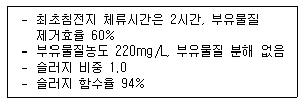
- 2.2m3/1,000m3
- 3.2m3/1,000m3
- 4.2m3/1,000m3
- 5.2m3/1,000m3
(정답률: 20%)
49. 염소 소독에 의한 세균의 사멸은 1차 반응 속도식에 따른다. 잔류염소 농도 0.4mg/L에서 2분간에 85%의 세균이 살균 되었다면 99% 살균을 위해서 몇 분의 시간이 필요한가?
- 약 5분
- 약 10분
- 약 15분
- 약 20분
(정답률: 42%)
50. 어느 침전지의 유량이 50m3/h이고 침전지 유효 수심이 3.5m인 이상적인 침전지에서 침강속도가 0.2m/h인 입자들을 100% 제거하기 위한 침전지의 최소 수면적은?
- 150m2
- 200m2
- 250m2
- 300m2
(정답률: 56%)
51. 입자상 매체 여과를 이용하는 살수여상 공정으로부터 유출되는 유출수의 부유물질을 제거하고자 한다. 유출수의 평균 유량은 75,000m3/day, 여과속도는 120l/m2ㆍmin이고 4개의 여과지(병렬기준)를 설계하고자 할 때 여과지 하나의 면적은?
- 약 49m2
- 약 69m2
- 약 89m2
- 약 109m2
(정답률: 41%)
52. 호수의 고형물질 농도가 2.5mg/L이고 바닥으로의 침전율이 500g/m2ㆍyr일 때 침강속도(m/day)는?
- 약 0.21
- 약 0.34
- 약 0.55
- 약 0.78
(정답률: 53%)
53. 다음 조건하에서 Monod식(Michaelis－Menten식 이용)을 적용한 세포의 비중식속도(Specific Growth Rate)는? (단, 제한기질농도 200mg/l, 1/2포화농도(KS) 50mg/l, 세포의 비중식소도 최대치 0.15hr-1)
- 0.08hr-1
- 0.12hr-1
- 0.16hr-1
- 0.24hr-1
(정답률: 65%)
54. 슬러지 탈수 방법에 관한 설명으로 틀린 것은?
- 원심분리기∶고농도의 부유성 고형물에 적합
- 벨트형 여과기∶슬러시 특성에 민감함
- 원심분리기∶건조한 슬러지 케익을 생산함
- 벨트형 여과기∶유입부에 슬러지 분쇄기 설치가 필요함
(정답률: 28%)
55. 염삼투장치로 하루에 800,000l의 3차 처리된 유출수를 탈염하고자 한다. 이에 대한 자료가 다음과 같을 때, 요구되는 막 면적은?
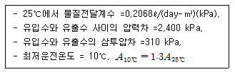
- 약 2,610m2
- 약 2,510m2
- 약 2,410m2
- 약 2,310m2
(정답률: 48%)
56. 생물막을 이용한 하수처리방식인 접촉산화법의 장단점으로 틀린 것은?
- 분해속도가 낮은 기질제거에 효과적이다.
- 난분해성물질 및 유해물질에 대한 내성이 높다.
- 고부하시에도 매체의 공극으로 인하여 폐쇄 위험이 적다.
- 매체에 생성되는 생물량은 부하조건에 의하여 결정된다.
(정답률: 48%)
57. 암모니아성 질소가 50mg/L인 폐수의 완전 질산화에필요한 이론적 산소요구량(mg/L)은?
- 약 430
- 약 330
- 약 230
- 약 130
(정답률: 40%)
58. BOD5가 70% 처리된다면, BOD5 1,600mg/L인 폐수의 메탄 생성 가능량은? (단, k1 0.08d-1이다(base10), 0.08d-1,CODBODu)
- 약 270mgCH4/L(처리폐수)
- 약 370mgCH4/L(처리폐수)
- 약 470mgCH4/L(처리폐수)
- 약 570mgCH4/L(처리폐수)
(정답률: 22%)
59. 표준 활성슬러지법에서 하수처리를 위해 사용 되는 미생물에 관한 설명으로 맞는 것은?
- 지체기로부터 대수증식기에 걸쳐 존재하는 미생물에 의해 하수가 주로 처리된다.
- 대수증식기로부터 감쇠증식기에 걸쳐 존재하는 미생물에 의해 하수가 주로 처리된다.
- 감쇠증식기로부터 내생호흡기에 걸쳐 존재하는 미생물에 의해 하수가 주로 처리된다.
- 내생호흡기로부터 사멸기에 걸쳐 존재하는 미생물에 의해 하수가 주로 처리된다.
(정답률: 57%)
60. 폐수로부터 암모니아를 처리하는 방법 중 Air Stripping이 있다. 이 방법은 다음 식에 의해 이루어진다. [NH3＋HO2↔NH4++OH-] 25℃, pH 10일 때 수중 NH3의 분율은? (단, 25℃에서의 평형상수 K=1.810-5이다.)
- 약 75%
- 약 80%
- 약 85%
- 약 90%
(정답률: 34%)
4과목: 수질오염공정시험기준
61. 암모니아성 질소를 흡광광도법인 인도 페놀법으로 분석하고자 한다. 측정원리가 맞는 것은?
- 암모늄이온이 차아염소산의 공존 아래에서 페놀과 반응하여 생성하는 인도 페놀의 청색을 630nm에서 측정하는 것이다.
- 암모늄이온이 술퍼닐아미드 및 페놀과 반응하여 생성하는 인도 페놀의 적색을 540nm에서 측정하는 것이다.
- 암모늄이온이 차아염소산의 공존 아래에서 페놀과 반응하여 생성하는 인도 페놀의 적색을 540nm에서 측정하는 것이다.
- 암모늄이온이 술퍼닐아미드 및 페놀과 반응하여 생성하는 인도 페놀의 청색을 630nm에서 측정하는 것이다.
(정답률: 27%)
62. 다음은 전기전도도 측정에 관한 내용이다. 틀린 것은?
- 전기전도도란 용액이 전류를 운반할 수 있는 정도를 말한다.
- 전기전도도는 전기저항의 역수로서 국제단위계로는umho/mS(micromho/millisiemen)로 나타내고 있다.
- 전기전도도는 온도차에 의한 영향(약 2%/℃)이 크다.
- 용액 중의 이온세기를 신속하게 평가할 수 있는 측정항목이다.
(정답률: 44%)
63. 다음은 PCB 측정원리에 관한 설명이다. ( )안에 맞는 내용은?
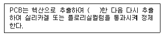
- 층분리
- pH를 조정
- 알칼리 분해
- 농축
(정답률: 35%)
64. 수질측정항목과 시료 최대보존기간이 잘못 연결된 것은?
- 생물 화학적 산소요구량－48시간
- 용존 총인－48시간
- 6가 크롬－24시간
- 분원성 대장균군－24시간
(정답률: 37%)
65. 다음은 기체크로마토그래피법을 적용하여 석유계총 탄화수소를 측정할 때의 원리이다. ( ) 안에 맞는 내용은?
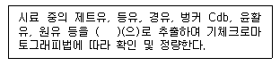
- 사염화탄소
- 클로로포름
- 다이클로로메탄
- 노말헥산＋에탄올
(정답률: 27%)
66. 다음 측정항목 중 시료의 보존방법이 다른 것은?
- 전기전도도
- 생물화학적산소요구량
- 6가 크롬
- 화학적산소요구량
(정답률: 38%)
67. 인산염 인 표준용액(0.1mgPO4－P/mL) 250mL를 조제하기 위해 필요한 인산2수소칼륨(KH2PO4)의 양(g)은? (단, K 원자량＝39, P 원자량＝31)
- 0.08
- 0.11
- 0.18
- 0.24
(정답률: 42%)
68. 예상 BOD치에 대한 사전경험이 없을 때에는 희석하여 시료용액을 조제한다. 시료가 오염된 하천 수인 경우에 관한 내용으로 맞는 것은?
- 1～5%의 시료가 함유되도록 희석 조제한다.
- 5～15%의 시료가 함유되도록 희석 조제한다.
- 15～25%의 시료가 함유되도록 희석 조제한다.
- 25～100%의 시료가 함유되도록 희석 조제한다.
(정답률: 53%)
69. 다음은 원자흡광광도법에 의한 크롬측정에 관한 내용이다. ( )안에 맞는 내용은?
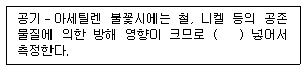
- 황산나트륨을 1% 정도
- 황산나트륨을 3% 정도
- 수산나트륨을 1% 정도
- 수산나트륨을 3% 정도
(정답률: 30%)
70. 시료의 보존방법 중 4℃, H2SO4로 pH2 이하로 해야 되는 항목은?
- 암모니아성 질소
- 아질산성 질소
- 질산성 질소
- 부유물질
(정답률: 57%)
71. 음이온 계면활성제 시험방법은?
- 페난트로린법
- 메틸렌블루우법
- 디페닐카르바지드법
- 디메틸글리옥심법
(정답률: 61%)
72. 다음은 시안을 흡광광도법으로 측정하기 위한 원리이다. ( )안에 맞는 내용은?
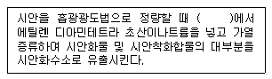
- pH 2 이하의 산성
- pH 4～5 범위의 약산성
- pH 6.5～7.5 범위의 중성
- pH 9 이상의 알칼리성
(정답률: 29%)
73. 다음 설명 중 잘못된 것은?
- 수욕상 또는 물중탕 중에서 가열한다 함은 따로 규정이 없는 한 수온 100℃에서 가열함을 뜻한다.
- 액체의 산성, 알칼리성 또는 중성을 검사할때는 따로 규정이 없는 한유리전극에 의한 pH 미터로 측정하고 액성을 구체적으로 표시할 때는 pH 값을 쓴다.
- 진공이라 함은 15mmH2O 이하의 진공도를 말한다.
- 분석용 저울은 0.1mg까지 달 수 있는 것이라야 한다.
(정답률: 50%)
74. 순수한 정제수 500ml에 HCI(비중 1.18) 100ml를 혼합했을 경우 이 용액의 염산농도는 몇 중량 %인가?
- 19.1%
- 20.0%
- 23.4%
- 31.7%
(정답률: 18%)
75. 이온전극법에서 사용되는 이온전극인 격막형 전극으로 측정할 수 있는 이온과 가장 거리가 먼 것은?
- NH4+
- CN-
- NO2-
- Cl-
(정답률: 28%)
76. 시료의 전처리 방법 중 질산－과염소산에 의한 분해법에 관한 설명으로 잘못 된 것은?
- 과염소산을 먼저 넣어주고 질산을 주입하여야 폭발을 방지할 수 있다.
- 납을 측정할 경우 시료 중에 황산이온(SO42-)이 다량 존재하면 측정값에 손실을 가져온다.
- 유기물을 다량 함유하고 있으면서 산화분해가 어려운 시료들에 적용한다.
- 유기물을 함유한 뜨거운 용액에 과염소산을 넣어서는 안 된다.
(정답률: 24%)
77. 불소 측정을 위한 란탄－알리자린 콤프렉손법에 관한 설명으로 틀린 것은?
- 정량범위는 0.004～0.⑤mg이며 표준편차는 10～3%이다.
- 알루미늄 및 철의 방해가 크나 증류하면 영향이 없다.
- 시료 중 불소함량이 정량범위를 초과할 경우 탈색현상이 나타날 수 있다.
- 유효측정농도는 0.0⑤mg/L 이상으로 한다.
(정답률: 28%)
78. 디페닐카르바지드를 작용시켜 생성되는 착화합물의 흡광도를 540nm에서 측정하여 정량하는 항목은?
- 니켈
- 6가 크롬
- 구리
- 카드뮴
(정답률: 60%)
79. 수질오염공정시험기준상 질산성 질소의 측정법으로 가장 적절한 것은?
- 흡광광도법(디아조화법)
- 이온크로마토그래피법
- 이온전극법
- 카드뮴 환원법
(정답률: 55%)
80. 원자흡광광도법의 용어에 관한 설명으로 틀린 것은?
- 공명선∶원자가 외부로부터 빛을 흡수했다가 다시 먼저 상태로 돌아갈 때 방사하는 스펙트럼선
- 역화∶불꽃의 연소속도가 크고 혼합기체의 분출속도가 작을 때 연소현상이 내부로 옮겨지는 것
- 다음극 중공음극램프∶두개 이상의 중공음극을 갖는 중공음극램프
- 선프로파일∶파장에 대한 스펙트럼선의 근접도를 나타내는 곡선
(정답률: 34%)
5과목: 수질환경관계법규
81. 시장, 군수, 구청장이 낚시금지구역 또는 낚시제한 구역을 지정하려는 경우에 고려하여야 하는 사항과 가장 거리가 먼 것은?
- 용수의 목적
- 연도별 낚시 인구의 현황
- 낚시터 발생 쓰레기에 대한 영향평가
- 수질오염도
(정답률: 48%)
82. 환경부장관 또는 시도지사가 측정망을 설치하기 위한 측정망 설치계획에 포함시켜야 하는 사항과 가장 거리가 먼 것은?
- 측정망 배치도
- 측정망 설치시기
- 측정자료의 확인방법
- 측정망 운영방안
(정답률: 55%)
83. 호소에 대한 환경기준 중 생활환경기준 등급이 ‘약간 좋음’인 경우에 항목별 기준으로 틀린 것은? (단, 단위는 mg/L)
- 총인(T－P)∶0.03 이하
- 총질소(T－N)∶0.3 이하
- 부유물질량(SS)∶5 이하
- 화학적 산소요구량(COD)∶4 이하
(정답률: 37%)
84. 다음 중 폐수종말처리시설 기본계획에 포함되어야 할 사항과 가장 거리가 먼 것은?
- 폐수종말처리시설에서 배출허용기준 적합여부 및 근거에 관한 사항
- 폐수종말처리시설의 폐수처리계통도, 처리능력 및 처리 방법에 관한 사항
- 폐수종말처리시설의 설치ㆍ운영자에 관한 사항
- 오염원 분포 및 폐수배출량과 그 예측에 관한 사항
(정답률: 16%)
85. 오염총량관리기본방침에 포함되어야 하는 사항과 가장 거리가 먼 것은?
- 오염원의 조사 및 오염부하량 산정방법
- 오염총량관리의 목표
- 오염총량저감을 위한 방안
- 오염총량관리의 대상 수질오염물질 종류
(정답률: 65%)
86. 환경기술인 등의 교육에 관한 설명으로 틀린 것은?
- 환경기술인의 교육기관은 환경보전협회이다.
- 기술요원의 교육기관은 국립환경인력개발원이다.
- 교육과정은 환경기술인과정과 폐수처리기술요원과정이 있다.
- 교육과정의 교육기간은 3일 이내로 한다.
(정답률: 62%)
87. 비점오염원의 변경신고 기준으로 틀린 것은?
- 비점오염원 또는 비점오염저감시설의 전부 또는 일부를 폐쇄
- 비점오염원의 종류, 위치, 용량의 변경
- 총 사업면적, 개발면적 또는 사업장 부지 면적이 처음 신고면적의 100분의 15 이상 증가
- 상호, 대표자, 사업명 또는 업종의 변경
(정답률: 35%)
88. 다음 ( )안에 맞는 내용은?
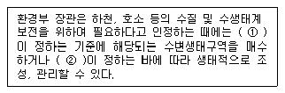
- ① 대통령령, ② 환경부령
- ① 환경부령, ② 대통령령
- ① 자치단체장, ② 대통령령
- ① 자치단체장, ② 환경부령
(정답률: 72%)
89. 환경기준 중 수질 및 수생태계 상태별 생물학적 특성 이해표에서 생물등급이‘보통~약간 나쁨’ 인 경우의 생물 지표종(어류)에 해당되는 것은? (단, 하천 기준)
- 붕어
- 갈겨니
- 미꾸라지
- 끄리
(정답률: 28%)
90. 용어의 정의로 틀린 것은?
- 폐수∶물에 액체성 또는 고체성의 수질오염 물질이 혼입되어 그대로 사용할 수 없는 물을 말한다.
- 비점오염저감시설∶수질오염방지시설 중 비점 오염원으로부터 배출되는 수질오염물질을 제거하거나 감소하게 하는 시설로서 환경부령이 정하는 것을 말한다.
- 폐수무방류배출시설∶폐수배출시설에서 발생하는 폐수를 당해 사업장 안에서 수질오염방지 시설을 이용하여 처리하거나 동일 배출시설에 재이용하는 등 공공수역으로 배출하지 아니하는 폐수배출시설을 말한다.
- 수면관리자∶호소를 관리하는 자를 말하며 동일한 호소를 관리하는 자가 2 이상인 경우에는 하천법에 의한 하천 관리청에 속한 자가수면관리자가 된다.
(정답률: 72%)
91. 수질오염경보 중 수질오염감시경보 대상 수질오염 물질이 아닌 것은?
- 부유물질
- 전기전도도
- 용존산소
- 클로로필－a
(정답률: 18%)
92. 비점오염저감시설 중 장치형 시설에 해당되는 것은?
- 생물학적 처리형 시설
- 침투형 시설
- 저류형 시설
- 인공습지형 시설
(정답률: 65%)
93. 폐수처리방법이 물리적 또는 화학적 처리방법인 경우 적정 시운전 기간은? (단, 가동개시일 12월 1일이다.)
- 가동개시일부터 70일
- 가동개시일부터 50일
- 가동개시일부터 30일
- 가동개시일부터 15일
(정답률: 64%)
94. 사업장의 규모별 구분에 관한 설명으로 틀린 것은?
- 1일 폐수배출량이 1,000m3인 사업장은 제2종 사업장에 해당된다.
- 1일 폐수배출량이 100m3인 사업장은 제4종 사업장에 해당된다.
- 폐수배추량은 최근 90일 중 가장 많이 배출한 날을 기준으로 한다.
- 최초 배출시설 설치허가시의 폐수배출량은 사업계획에 따른 예상용수사용량을 기준으로 산정한다.
(정답률: 58%)
95. 다음 중 특정수질유해물질이 아닌 것은?
- 아크릴로니트릴
- 브로모포름
- 테트라클로로에틸렌
- 퍼클로레이트
(정답률: 28%)
96. 다음 중 수질오염감시경보의 단계가‘관심’일 우 관계기관별 조치사항으로 틀린 것은?
- 수면관리자－수체변화 감시 및 원인 조사
- 환경관리공단이사장－관심경보 발령 및 관계 기관 통보
- 취수장, 정수장 관리자－정수 처치 및 수질 분석 강화
- 유역, 지방환경청장－수면 관리자에게 원인 조사 요청
(정답률: 38%)
97. 측정기기부착사업자가 고의로 측정기기를 작동하지 아니하게 하거나 정상적은 측정이 이루어지지 아니 하도록 하는 행위를 한 경우의 벌칙 기준은?
- 1년 이하의 징역 또는 1천만원 이하의 벌금
- 3년 이하의 징역 또는 1천5백만원 이하의 벌금
- 3년 이하의 징역 또는 2천만원 이하의 벌금
- 5년 이하의 징역 또는 3천만원 이하의 벌금
(정답률: 14%)
98. 환경부 장관이 수립하는‘대권역계획’에 포함 되어야 하는 사항과 가장 거리가 먼 것은?
- 상수원 및 물 이용현황
- 수질오염 예방 및 저감대책
- 수질 및 수생태계 보전조치의 추진 방향
- 점오염원, 비점오염원 및 기타수질오염원의 수질 목표기준
(정답률: 27%)
99. 폐수처리업 등록기준 중 폐수재이용업의 기술능력 기준으로 맞는 것은?
- 수질환경산업기사, 화공산업기사 중 1명 이상
- 수질환경산업기사, 대기환경산업기사 중 1명 이상
- 수질환경산업기사, 일반기계기사 각각 1명 이상
- 수질환경산업기사, 전기기사 각각 1명 이상
(정답률: 60%)
100. 공공수역에 특정수질유해물질 등을 누출, 유출 하거나 버리는 행위를 한 자에 대한 벌칙기준으로 옳은 것은?
- 5년 이하의 징역이나 또는 3천만원 이하의 벌금에 처함
- 3년 이하의 징역이나 또는 2천만원 이하의 벌금에 처함
- 3년 이하의 징역이나 또는 1천 5백만원 이하 벌금에 처함
- 2년 이하의 징역이나 또는 1천만원 이하의 벌금에 처함
(정답률: 6%)
ThOD는 이론적 산소 요구량을 나타내는 용어로, 유기물이 완전 연소될 때 소비되는 산소의 양을 의미한다. glucose 1 mol이 완전 연소될 때 필요한 산소의 양은 다음과 같다.
C6H12O6 + 6O2 → 6CO2 + 6H2O
6 mol의 glucose가 완전 연소될 때 필요한 산소의 양은 6 × 6 mol = 36 mol이다. 따라서 glucose 1 mol의 ThOD는 36 mol이 된다.
TOC는 Total Organic Carbon의 약자로, 유기탄소의 총 양을 나타내는 용어이다. glucose 1 mol에는 6 mol의 탄소가 포함되어 있으므로, glucose 100 mg/L 용액에는 100 mg/L × 6 mol/L = 600 mg/L의 유기탄소가 포함되어 있다.
따라서 glucose 100 mg/L 용액의 ThOD/TOC 비율은 다음과 같다.
ThOD/TOC = (glucose 1 mol의 ThOD) ÷ (glucose 100 mg/L 용액의 TOC)
ThOD/TOC = 36 mol ÷ (600 mg/L ÷ 12.011 g/mol)
ThOD/TOC = 36 mol ÷ 0.⑤00 mol/L
ThOD/TOC = 720
따라서 ThOD/TOC 비율은 720:1이며, 소수점으로 나타내면 2.67이 된다. 따라서 정답은 "2.67"이다.